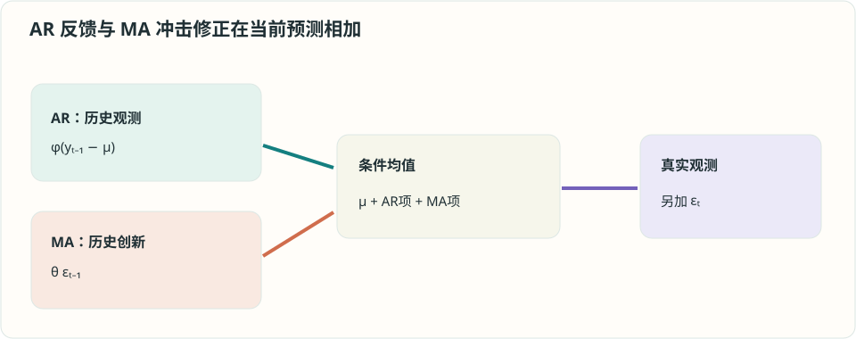
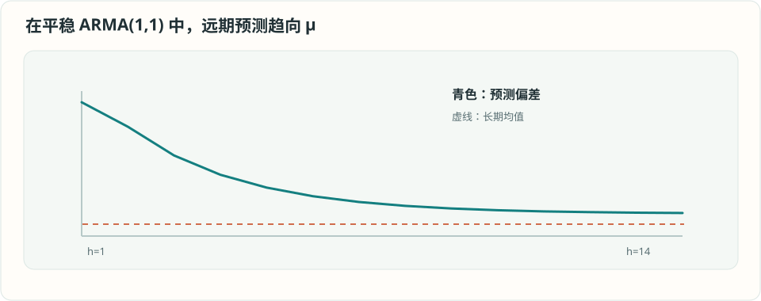

CHAPTER 10 / 28 · STATISTICAL MODELLING
ARMA：反馈与创新的统一模型
ARMA(p,q) 将观测反馈与创新短期影响组合。深入理解滞后多项式、冲击响应、条件预测、似然估计、AICc、残差和时间回测。
AR 模型让过去的观测偏差影响当前预测；MA 模型让过去的创新冲击在有限时间内继续产生影响。在现实序列里，这两种机制可能同时存在。ARMA 不是简单地“用 AR 解释趋势、用 MA 解释噪声”：它是在平稳序列中用反馈项和创新滤波项共同描述线性动态。
为避免软件和教材常见的符号混淆，本章一律使用 Φ(B)=1−ΣφⱼBʲ、Θ(B)=1+ΣθⱼBʲ 的约定，并把未观测创新与模型拟合残差区分。
01 · 一个方程把 AR 与 MA 合在一起
对于均值 μ 稳定、二阶平稳的序列，定义 zₜ=yₜ−μ，ARMA(p,q) 写成 AR 滞后项加 MA 创新项。AR 部分并不意味着真实世界的永久趋势；其主要作用是描述平稳偏差如何反馈。

观测值 yₜ 是直接记录的数据，而创新 εₜ 是模型定义下新的不可预测部分。它通常不是直接观察到的“历史业务错误”，而需要通过滤波或拟合估计。
02 · 滞后多项式统一根与冲击传播
滞后算子 B 使 Byₜ=yₜ₋₁。AR 多项式与 MA 多项式分别定义为 Φ(B)=1−φ₁B−…−φₚBᵖ、Θ(B)=1+θ₁B+…+θqBq。模型可以凝结为下面的式子。
在这些条件成立、且两个多项式没有公共因子的基本情形下，ARMA 可以写成无穷阶 MA 表示 zₜ=Ψ(B)εₜ。如果 AR 与 MA 存在共同因子，形式上的 (p,q) 可能存在可约化问题；模型阶数的选择不只看参数显著性。
03 · ARMA(1,1) 的冲击响应会怎样衰减
令 zₜ=φzₜ₋₁+εₜ+θεₜ₋₁。把它写成 Ψ(B)=(1+θB)/(1−φB)，得到单位冲击响应 ψ₀=1，以及所有 h≥1 的 ψₕ=(φ+θ)φ^(h−1)。这同时体现 MA 的首期修正和 AR 的持续反馈。
纯 AR(1) 对应 θ=0；纯 MA(1) 对应 φ=0。它们不是两类完全互斥的现实“物理力”，而是用不同多项式因子描述同一类线性随机过程。
04 · 未来未知的创新取条件期望为零
在时点 T 已知观测历史，并已得到合理的创新估计 ε̂_T 时，ARMA(1,1) 的一步预测是 μ+φ(y_T−μ)+θ ε̂_T。两步以后，未知未来创新的条件期望设为零，预测继续沿 AR 反馈递推，因此远期预测逐渐回到 μ。

与点预测不同，预测区间需要通过 ψₕ 的平方和传播误差方差，还要考虑估计参数的不确定性及模型规格误差。长步长预测越靠近均值，不代表不确定性越小。
05 · 从 ACF/PACF 线索到 AICc / BIC 的可比模型
纯 AR(p) 的理论 PACF 在 p 阶后截尾，纯 MA(q) 的理论 ACF 在 q 阶后截尾；混合 ARMA 常见两者拖尾。但有限样本相关图有噪声，不应用“前 3 阶显著就一定是 (3,3)”这样的规则自动定阶。
比较模型之前先固定：相同的训练观察值、均值和差分设定、似然约定及参数计数。AICc、BIC 只是约束复杂度的证据之一；最终必须结合残差创新诊断与真正未来窗口的预测表现。
06 · 残差必须接近模型假设，而不是“p>0.05 就正确”
检验的正确对象通常是模型的创新残差，而不一定是未经滤波的原始回归剩余项。它们理想上不含可检出的线性自相关；若还存在条件异方差、非正态厚尾或结构断点，即使 Ljung–Box p 值较大，也不能保证预测区间校准。
| 检查 | 用于发现什么 | 局限 |
|---|---|---|
| 参数根与收敛 | 平稳 / 可逆约束是否合理 | 数值收敛不等于统计模型正确 |
| 创新残差 ACF | 剩余线性相关 | 接近零不排除非线性依赖 |
| Ljung–Box | 前若干滞后总体线性相关 | 未拒绝不能证明独立 |
| 残差平方 ACF / ARCH | 条件波动的相关结构 | 需要方差模型时进一步检验 |
| 前向回测 | 未来点预测 / 区间性能 | 必须保证一致的预测时刻与信息集 |
检验 ARMA(p,q) 残差时，常用 model_df=p+q 调整 Ljung–Box 自由度，且检验最大滞后必须大于该自由度；不同框架也可能需要其他调整。
07 · AR 系数改变冲击的长尾，但 MA 参数保持不变
固定 θ=0.35，只改变 φ，计算 ψ₀=1 和 ψₕ=(φ+θ)φ^(h−1)。当 φ<0 时，冲击响应可能交替变号；当 φ+θ 接近零时，响应会显著抵消。所有演示均限制在 |φ|<1。
本图表示已知理论参数下的解析结果，不是从真实数据估计出来的。
08 · Python：生成 ARMA(1,1) 并进行训练外预测
使用正号 MA 约定的 ArmaProcess 生成零均值平稳、可逆的 ARMA(1,1)，训练前 420 期，留出 60 期一次性做多步预测，再检查创新残差。
import numpy as np
from statsmodels.tsa.arima_process import ArmaProcess
from statsmodels.tsa.arima.model import ARIMA
from statsmodels.stats.diagnostic import acorr_ljungbox
rng = np.random.default_rng(2026)
phi, theta = 0.55, 0.35
process = ArmaProcess(ar=np.array([1.0, -phi]),
ma=np.array([1.0, theta]))
assert process.isstationary and process.isinvertible
y = process.generate_sample(nsample=480, burnin=300,
distrvs=rng.standard_normal)
train, test = y[:-60], y[-60:]
fit = ARIMA(train, order=(1, 0, 1), trend="n",
enforce_stationarity=True,
enforce_invertibility=True).fit()
forecast = fit.forecast(steps=len(test))
print("fit parameters:", fit.params)
print("held-out MAE:", np.mean(np.abs(forecast-test)))
print(acorr_ljungbox(fit.resid, lags=[12], model_df=2))
assert len(forecast) == len(test) == 60ArmaProcess 的 AR 多项式数组用 [1,−φ]，MA 多项式用 [1,+θ]；如果都写成正号，就会模拟另一种 AR 过程。此示例报告一次固定样本的估计与误差，不保证 ARMA 必然优于更简单的基线。
09 · 与下一章 ARIMA 的衔接
ARMA 适用于在合适均值处理与参数条件下可视为平稳的序列。若原始水平有随机趋势，直接把同样的模型强加到水平上可能不恰当；ARIMA 通过差分后的动态构造对某些积分过程建模。但“先差分到看着平稳再拟合”不是万能方案：过度差分、季节性与结构断点仍需审查。
进一步阅读与技术核对
引用指向公式、模型定义与实现接口的官方资料。所有图和模拟结果均为教学示意，并非经验表现的证明。